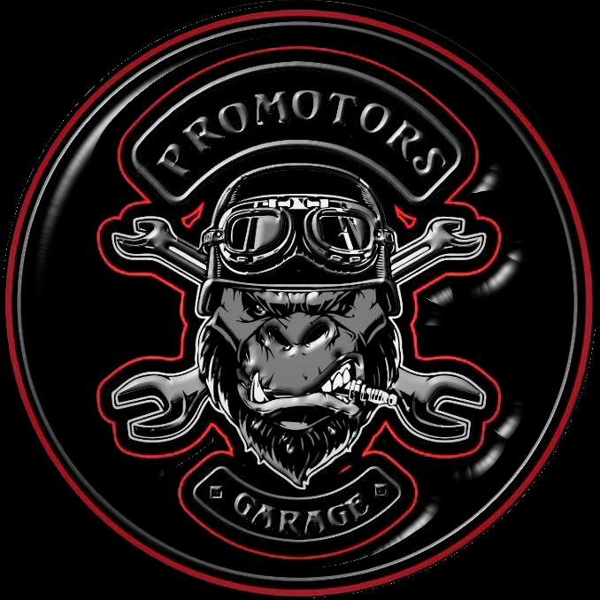

Software Engineering Management
Desarrollo de una aplicación de escritorio para la administración de los datos de la mecánica “PRO MOTORS

Describir un proyecto basado en la ingeniería de software, donde se detalle:
Tematica:
Se requiere la implementación de un programa de escritorio que permita administrar los datos y gestionar todos los servicios que se realizan en una mecánica.
Objetivos
Objetivo General:
- Desarrollar un programa de escritorio para llevar la administración de los datos y servicios de la mecánica “PRO MOTORS”
Objetivos Especifico:
- Emplear técnicas que permitan elicitar los requisitos en la fase ingeniería de requisitos del desarrollo del software.
- Modelar el diseño del sistema utilizando notación de lenguaje unificado de modelado(UML) para darle un mayor detalle a la estructura del sistema.
- Desarrollar el aplicativo en base a la metodología Extreme Programming.
Alcance
El presente proyecto tendrá el propósito de analizar y diseñar un sistema informático para una mecánica,
siendo un sistema que sirva de apoyo a los trabajadores y les permita llevar un control sistemático de todos los procesos que realizan.
Para la realización del alcance se plantean las siguientes funcionalidades:
- Gestión de Vehículos
- Gestión de usuarios
- Gestión de mantenimiento
- Gestión de facturación
- Gestión de servicios
Fases:
- Emplear técnicas que permitan elicitar los requisitos en la fase ingeniería de requisitos del desarrollo del software.
- Investigar e identificar técnicas de recolección de requisitos
- Elegir la mejor opción dentro de las técnicas de recolección de requisitos que se investigó.
- Identificar los requisitos funcionales y no funcionales del sistema.
- Modelar el diseño del sistema utilizando notación de lenguaje unificado de modelado(UML) para darle un mayor detalle a la estructura del sistema.
- Diseñar los diagramas clase y descripción de casos de uso del sistema
- Realizar el diagrama de interacción del sistema.
- Desarrollar el aplicativo en base a la metodología Extreme Programming
- Desarrollar el programa de escritorio utilizando lenguaje de programación java.
- Realizar pruebas de rendimiento del sistema.
- Evaluar la satisfacción del cliente mediantes encuestas.
Tecnologías (Lenguajes, metodologías, plataformas)
Para realizar el desarrollo del proyecto se va a utilizar el lenguaje de programación java,
y la metodología Extreme Programming la cual nos va servir para organizarnos de la mejor manera
posible permitiéndonos ser eficientes en el transcurso del proyecto, además de eso para el almacenamiento
y manejo de datos se pretende trabajar con Mysql.
Metodología
Extreme Programming:
Es una metodología de desarrollo de software la cual se desarrolla teniendo
en cuenta sus valores: comunicación, simplicidad, retroalimentación, respeto y coraje. [1]
Comunicación:
Todo lo relacionado al proyecto ya sean cambios o mejoras, deben ser dados a conocer a todos los integrantes del equipo.
Simplicidad:
Se pretende desarrollar lo necesario intentando no perder el tiempo en labores que no cumplen con los requerimientos en el presente momento,
es decir desarrollar en fase ascendente(desde la parte más sencilla, hasta la más compleja).
Retroalimentación:
Cada etapa desarrollada deberá contar con las respectivas pruebas funcionales, para determinar la confiabilidad del producto para la presentación con el cliente.
Respeto:
El equipo deberá respetar las ideas o propuestas del cliente.
Coraje:
Un equipo debe tener sus actividades planificadas mediante las cuales evita el colapso del proyecto, y tomar las medidas necesarias para llegar al término de los objetivos.[2]
Lenguaje de programación
JAVA
Es un lenguaje orientado a objetos de propósito general, su sintaxis es parecida a la de C y C + +,
además su diseño está especializado en la seguridad. Java realiza su comprobación muy estricta durante la compilación,
con lo cual impide problemas antes de la ejecución, misma que en la fase de ejecución encuentra el método adecuado según
sea el tipo de clase receptora. Así mismo Java posee mecanismos de seguridad que garantizan la ejecución,
comprobando antes de ejecutar el código. Otra característica de Java es que está preparado para la programación concurrente
sin necesidad de utilizar ningún tipo de biblioteca[2].
Base de datos
Mysql
MySQL es un sistema de gestión de bases de datos que es un conjunto de tablas que tiene un nombre con el cual se accederá a ella,
la tabla es una estructura de datos que organiza los datos en columnas y filas; cada columna es un campo y cada fila, un registro.
Funciona como interpretador de SQL(lenguaje declarativo de acceso a bases de datos relacionales que permite especificar diversos tipos de operaciones),
permite crear bases de datos y tablas, insertar datos, modificarlos, eliminarlos, ordenarlos, hacer consultas y realizar muchas operaciones, etc.[3]
Plataforma
Escritorio
Son los que se encuentran ejecutándose de manera local en un ordenador ya sea este MAC, Windows o Linux respectivamente,
cuyo rendimiento depende de las características tanto de su hardware como software, ya que no necesitan estar conectadas a
internet para poder trabajar con ellas. Estas aplicaciones son muy utilizadas en tareas como gestión de pedidos,
control de inventarios, personal. [5]
Dentro del proceso de ingeniería de software, es la construcción de la solución informática. Detallar la posible metodología,
filosofía o arquitectura de software a utilizar en el presente proyecto(Detallar fases, roles).
Metodología Extreme Programming
Fase 1: Planificación
En función de la identificación de las historias de los usuarios estas se priorizan y clasifican en subversiones este plan será revisado
cada dos semanas más o menos en este punto se debería tener un software útil y en funcionamiento listo para ser probado y lanzado.
Fase 2: Diseño
En esta etapa intentaremos trabajar con código simple, haciendo solo lo necesario para que funcione el prototipo. Además,
se generarán tarjetas CRC (Class-Responsibility-Collaboration) para el diseño de software orientado a objetos.
Fase 3: Codificación
En esta etapa, la programación se realiza en parejas frente a la misma computadora en ocasiones,
los programadores intercambian lugares de esta manera pueden crear un código más universal con el que
cualquier otro programador pueda trabajar y comprender, el objetivo es tener un programa que esté bien organizado y sea entendible.
Fase 4: Pruebas
Las pruebas automatizadas deben ejecutarse de manera seguida dado que estos proyectos son a menudo de corto plazo,
las pruebas automatizadas y continuas son importantes. Además, los clientes pueden realizar pruebas ellos mismos,
sugerir nuevas pruebas y probar mini versiones para ir probando el sistema y viendo si se adapta a sus necesidades.
Fase 5: Lanzamiento
Es la fase final y significa que hemos probado con éxito todas las historias de usuarios o pequeñas
versiones para que coincidan con los requisitos del cliente o empresa y finalmente tenemos un software
útil y podemos ponerlo en el producto.
Roles
En todos los equipos de trabajo existen varios roles que cumplen sus integrantes y extreme programming no es la excepción,
a continuación se mostrará los roles más importantes dentro de este metodologia:
- Programador: Realiza las pruebas unitarias al sistema y escribe el código,también se encarga de estimar el tiempo que lleva desarrollar cada una y define las historias de usuario.
- Cliente: describe las historias de usuarios y las pruebas funcionales para probar su implementación. Priorice sus historias de usuario y decida qué historias entregar en cada iteración, con un enfoque en brindar el máximo valor comercial.
- El probador (Tester): es quien se encarga de la prueba del producto, la calidad del producto final depende en gran medida de su trabajo[6].
- Tracker(Encargado de seguimiento): Es aquel que está encargado del seguimiento del equipo proporcionando un feedback.
- Entrenador (coach):Se encarga de proveer las guías a los integrantes del equipo para que se apliquen las prácticas de XP y se realice el proceso adecuadamente. También se encarga de decidir las tecnologías o metodologías en el desarrollo del proyecto.
- Gestor (Big boss): Es el administrador de equipo y debe tener un perfil de experto en tecnología y gestión de proyectos informáticos. El formará el equipo, obtendrá los recursos que sean necesarios y gestionará los problemas que se generan. Además administra las reuniones,planes de iteración y agendas, etc)[7][8][9].
Arquitectura Monolítica
Es un patrón de desarrollo con el cual se crea un software en una única base de código, es decir, solo se tiene que compilar una vez. Por esto es que una aplicación con un desarrollo monolítico se define como una unidad cohesiva de código, por ende sus componentes trabajan en conjuntos y utilizan el mismo espacio de memoria y recursos[10].
En base a la selección en el numeral 2, levantar el proceso en notación BPM (bpmn)

Bibliografia
- Umh.es. [Online]. Available: http://umh2818.edu.umh.es/wp-content/uploads/sites/884/2016/02/Scrum-y-eXtrem-Programming-para-programadores.pdf. [Accessed: 16-May-2022].
- Programación Extrema. (n.d.). UNIVERSIDAD NACIONAL AUTÓNOMA DE NICARAGUA, MANAGUA UNAN-MANAGUA RECINTO UNIVERSITARIO RUBÉN DARÍO (RURD) FACULTAD DE CIENCIAS E INGENIERÍA DEPARTAMENTO DE COMPUTACIÓN TEMA: METODOLOGÍA ÁGIL DE DESARROLLO DE SOFTWARE PROGRAMACIÓN Metodología Ágil Programación Extrema XP.
- “Introducción al lenguaje Java Índice,” Jtech.ua.es. [Online]. Available: http://www.jtech.ua.es/dadm/restringido/java/sesion01-apuntes.pdf. [Accessed: 16-May-2022].
- Gómez Rodríguez Juan Felipe. (2017). Implementación de aplicación web con acceso a base de datos para manejo de inventario de la empresa Orange Business Services Colombia S.A. https://repository.usta.edu.co/bitstream/handle/11634/29845/2017juangomez.pdf?sequence=1&isAllowed=y
- Hidalgo Carlos. (2016). DESARROLLO E IMPLEMENTACION DE UNA APLICACION DE ESCRITORIO PARA INVENTARIO Y FACTURACION EN EL RESTAURANTE “LA CABAÑA TIPICA”.". https://dspace.ups.edu.ec/bitstream/123456789/12671/1/UPS-GT001698.pdf
- T. Canive, “Metodología XP o Programación Extrema,” Gestor de proyectos online, 27-May-2020. [Online]. Available: https://www.sinnaps.com/blog-gestion-proyectos/metodologia-xp. [Accessed: 16-May-2022].
- sergioalbertoc, “ROLES,” Programación eXtrema, 14-Sep-2015. [Online]. Available: https://iswugaps2extremeprogramming.wordpress.com/2015/09/14/roles/. [Accessed: 16-May-2022].
- “Roles,” Extreme Programming, 21-Nov-2015. [Online]. Available: https://iswugxp.wordpress.com/roles/. [Accessed: 16-May-2022].
- “Extreme Programming: Qué es y cómo aplicarlo,” OpenWebinars.net, 18-Sep-2020. [Online]. Available: https://openwebinars.net/blog/extreme-programming-que-es-y-como-aplicarlo/. [Accessed: 16-May-2022].
- Ubiobio.cl. [Online]. Available: http://repobib.ubiobio.cl/jspui/bitstream/123456789/2672/1/Munoz_Hernandez_Ricardo.pdf. [Accessed: 16-May-2022].